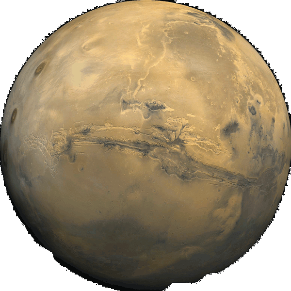

The Sun is the star at the center of the Solar System. It is almost perfectly spherical and consists of hot plasma interwoven with magnetic fields. It has a diameter of about 1,392,684 km, about 109 times that of Earth, and its mass (about 2x1030 kilograms, 330,000 times that of Earth) accounts for about 99.86% of the total mass of the Solar System. Chemically, about three quarters of the Sun's mass consists of hydrogen, while the rest is mostly helium. The remainder (1.69%, which nonetheless equals 5,628 times the mass of Earth) consists of heavier elements, including oxygen, carbon, neon and iron, among others.
Mercury
Mercury is the smallest planet in the Solar System. It is the closest planet to the sun. It makes one trip around the Sun once every 87.969 days. Mercury is bright when it is visible from Earth, ranging from -2.0 to 5.5 in apparent magnitude. It cannot be easily seen as it is usually too close to the Sun. Because Mercury is normally lost in the glare of the Sun (except during a solar eclipse), Mercury can only be seen in the morning or evening twilight.
Venus
Venus is the second planet from the Sun. It is a terrestrial planet because it has a solid, rocky surface. The other terrestrial planets are Mercury, Earth and Mars. Astronomers have known Venus for thousands of years. The ancient Romans named it after their goddess Venus. Venus is the brightest thing in the night sky except for the Moon. It is sometimes called the morning star or the evening star as it is brightest just before the sun comes up in the morning, and just after the sun goes down in the evening. Venus comes closer to the earth than any other planet does. Venus is sometimes called the sister planet of Earth as they are quite similar in size and gravity. In other ways the two planets are very different.
Earth
The Earth, our world, is the third planet from the Sun. It is one of the four terrestrial planets in our Solar System. This means most of its mass is solid. The other three are Mercury, Venus and Mars. Earth is home to millions of species of plants and animals, including humans. Earth is the only place in the universe where life has been confirmed to exist. The Earth formed around 4.5 billion years ago. The things that live on Earth have had a great impact on many aspects of the planet. For example, early lifeforms completely changed its air (atmosphere). The total of all life is called the biosphere. About 71% of Earth's surface is covered in salt water oceans. Earth is the only planet where liquid water is known to exist at present.
Mars

Mars is the fourth planet from the Sun in the Solar System. Mars is rocky and cold, with polar ice caps of frozen water and carbon dioxide. It has the largest volcano in the Solar System, and some very large impact craters. Mars is named after the mythological Roman god of war because it is a red planet, the colour of blood.
Jupiter
Jupiter is the largest planet in the Solar System. It is the fifth planet from the Sun. Jupiter is classified as a gas giant, because it is so large, and is made up mostly of gas. The other gas giants are Saturn, Uranus and Neptune. Jupiter can be seen with the naked eye, without any special equipment. It was known to the ancient Romans, who named it after their god Jupiter (Latin: Iuppiter). Jupiter is the third brightest object in the night sky. Only the Earth's moon and Venus are brighter. Jupiter has at least 66 moons. Of these, 55 are very small and less than five km wide. The four largest moons of Jupiter are Io, Europa, Ganymede and Callisto. They are called the Galilean moons, because they were discovered by the Italian astronomer Galileo Galilei. Ganymede is the largest moon in the Solar System.
Saturn
Saturn is the sixth planet from the Sun in the Solar System. It is the second largest planet in the Solar System, after Jupiter. Like Jupiter, Uranus and Neptune, it is a "gas giant". The inside of Saturn is probably a core of iron, nickel, silicon and oxygen compounds, surrounded by a deep layer of metallic hydrogen, then a layer of liquid hydrogen and liquid helium and finally, an outer gaseous layer. Saturn has 62 known moons orbiting the planet; 53 are officially named. The largest moon is Titan, which is larger in volume than the planet Mercury. Saturn was named after the Roman god Saturnus (called Kronos in Greek mythology). Saturn's symbol is ♄ which is the symbol of Saturnus' sickle.
Uranus
Uranus is the seventh planet from the Sun in the Solar System. It is a gas giant. It is the third largest planet in the solar system. The planet is made of ice, gases and liquid metal. Its atmosphere contains hydrogen, helium and methane. The temperature on Uranus is -197°C (79 K). The planet is tilted on its axis so much that it is sideways. Uranus completes its turn around the Sun in 84 earth years. It completes its turn around itself in 17 hours and 14 minutes. This means there are about 43,000 days in 1 uranian year. Uranus has 11 rings which are hard to see from earth. This planet can be seen with the naked eye under perfect conditions. Uranus is named after the Greek god Uranus, who was a god of sky.
Neptune
Neptune is the eighth and last planet from the Sun in the Solar System. It is a gas giant. It is the fourth largest planet and third heaviest. Neptune has four rings which are hard to see from the Earth. It is 17 times heavier than Earth and is a little bit heavier than Uranus. It was named after the Roman God of the Sea. Neptune's atmosphere (a layer of gas floating above planets) is mostly made up of hydrogen and helium. It also contains small amounts of methane which makes the planet appear blue. Neptune's blue color is much brighter compared to Uranus', which has a similar amount of methane, so there might be another reason why Neptune is blue. Neptune also has the strongest winds of any planet in the solar system, measured as high as 2,100 km/h or 1,300 mph.
Pluto
Pluto is the second-largest dwarf planet in the Solar System. It is smaller than the largest known dwarf planet, Eris. Its formal name is 134340 Pluto. The dwarf planet is the tenth-largest body that moves around the Sun. At first, Pluto was called a planet. Now, it is considered the second largest of the bodies in the Kuiper belt. Like other members of the Kuiper belt, Pluto is mainly made of rock and ice. It is quite small. It is about a fifth of the weight of the Earth's Moon. It has an odd orbit and This orbit is very sloped. It takes Pluto to 30 to 49 AU (4.4–7.4 billion km) from the Sun. This causes Pluto to sometimes go closer to the Sun than Neptune.
A Tour of the Solar System Created by Trevor Elliott
This website, A Tour of the Solar System, was my first attempt at a parallax website and an attempt to create a narrative parallax website using pure HTML5 and CSS3 for my class at WSU Vacnouver,DTC 355. I used hidden radio boxes and child selectors with CSS3 transition, all of which are most stable and usable in Chrome 26+. This was build for chrome (with no real fallbacks for other browsers) on mobile and computer using some of the experimental HTML5. The audio is unavailable on most mobile browsers. Some of the features included are: the scrollbar for this article is hidden, but still usable.
You can find more of my work online at my website and DeviantArt, as well as other places around the web.
All information and images are from NASA and Wikipedia.
The file are in the public domain because they were solely created by NASA. NASA copyright policy states that "NASA material is not protected by copyright unless noted". (See NASA copyright policy page or JPL Image Use Policy.)
For more information on the solar system look to Wikipedia.
For a more indepth look and tour of the the solar system, check out: 100,000 Stars by Google Data Arts Team
Background music loop clips: Farewell by Julien Neto and Water by Tanefication.